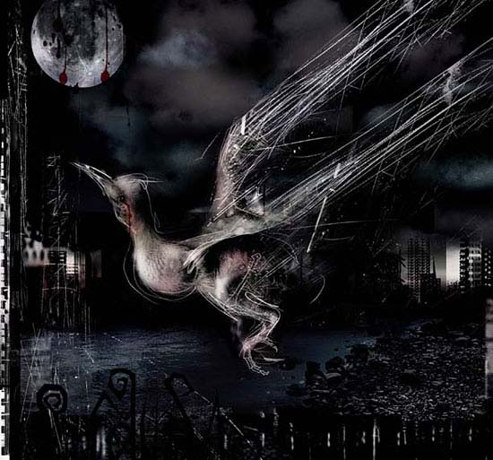

Shannon Hourigan
photographic digital art
Shannon Hourigan
photographic digital art
Shannon Hourigan is Australian, now living in Melbourne. She graduated from the Queensland College of Art in 1998 with a Bachelor of Visual Arts in photography. Her work is dark, provocative and uninhibited. It explores, as she tells us, notions of violence and pain, and juxtaposes antithetical elements such as glamour and horror, the beautiful and the grotesque, and sin and innocence. Her work is frankly intended to shock and compel. She is influenced by the Baroque artist Artemisia Gentileschi, by Caravaggio and by contemporary artists and filmmakers such as Junet and Caro, Joel-Peter Witkin, Bill Henson and the Brothers Quay. She also draws influence from a wide range of books, music and video games. She is often her own subject and model.
Birdy
 |